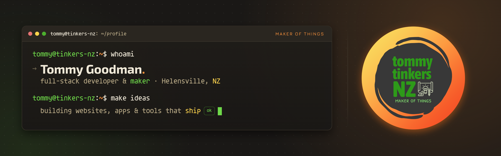

Hi, I'm Tommy.
Full-stack developer and maker based in Helensville, New Zealand.
I build websites, apps, and small tools that solve real problems, then I make sure they actually ship. I like clean code, tidy automation, and documentation that the next person can follow.
When the keyboard cools down I'm usually out in the workshop, tinkering with hardware, 3D printers, and anything with a motor in it.
Find me around the web
Featured builds
A few things I've made that I'm happy to point at.
tommytinkers.nz
live ↗My freelance front door. A warm, simple, honest site for the people I build things for. Same maker, brighter lighting than the portfolio.
thomasgoodman.me
live ↗My developer portfolio. The workshop view: a dark, terminal-flavoured place to show the engineering side of what I do.
whenuapai-key-press-manager
repo ↗A desktop key sign-out and audit system. Tracks who has which keys, when they were taken, and when they came back. Built to replace a paper logbook.
What I build with
By the numbers
Beyond the keyboard
Away from the screen you'll find me on coastal walks and bush tracks around Aotearoa, out on the bike, or racing 1/10th scale RC cars. Winters mean snowboarding. Most days end with my partner, the kids, and one very good dog.
Let's build something
Got an idea that needs making? I'm always happy to talk shop.
Good tools get out of the way. I try to build things that just work, then quietly do their job.